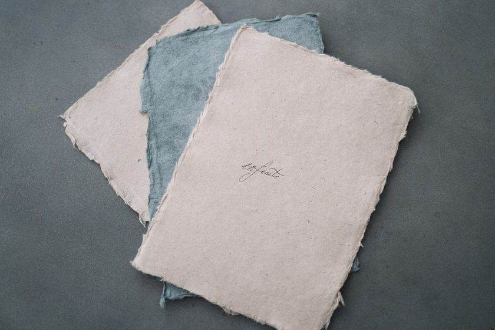
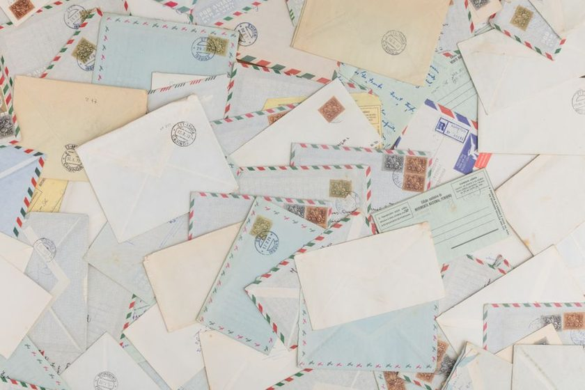

Letterfold
A folded sheet holds its crease long after the sentence is forgotten.
Letterfold is a small journal kept by people who still send paper. We write about the object itself — the weight of the stock, the fold that survives a pocket, the seal that tells you no one opened it first — and about the strange, slow etiquette of writing someone back.
Recent Entries
-
Jan 14
The Tri-Fold and Its Discontents
Why the standard business fold survives, and where it quietly fails a longer letter.
Folding -
Feb 3
Paper Weight as a First Sentence
The stock announces the letter before a single word is read. A short field guide to gsm.
Paper -
Feb 21
Wafer Seals, a Short History
Before wax sticks and signet rings, a thin disc of gum did the job of keeping a secret shut.
Sealing -
Mar 9
The Forty-Eight-Hour Reply
A short window seems to change what people are willing to put on the page.
Replying -

Mar 28Deckle Edges and the Torn Look
The ragged border isn't damage — it's how paper used to be made, and why some mills still fake it.
Materials -
Apr 12
Envelope Linings Nobody Sees
A patterned tissue that exists only to stop a letter from being read through the paper.
Materials -

May 5The Postscript as Second Thought
The line after the signature carries more than it should — a short study of the P.S.
Etiquette -
May 24
Ink That Survives a Damp Mailbox
Not every ink is written to last the walk from the box to the kitchen table.
Ink -
Jun 18
What a Drawer of Old Letters Teaches
Reading a decade of someone's correspondence in one sitting changes how you write the next one.
Archive
A quiet place to keep the letters you owe someone an answer to. Reply Tray tracks what came in, what's still open, and what you already sent back — nothing more.
Why We Write This
Letterfold began as a shared notebook among a few people who still mail things — a habit that turned out to need a home. We write about paper, folds, seals, and the timing of a reply because these small mechanics carry more of a relationship than they get credit for. Read more on the about page.